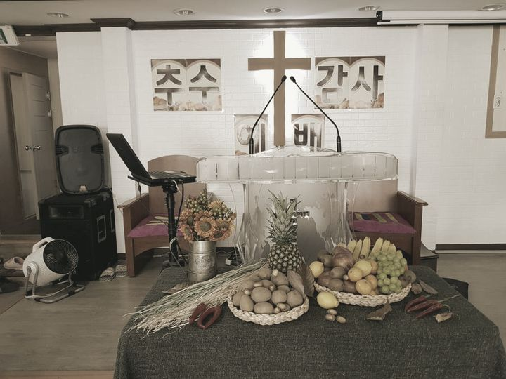
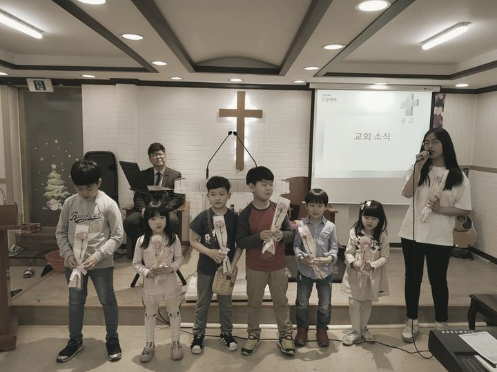

주일예배오전 11시성경공부주일 오후 1시아침예배오전 7시

성경 아카데미말씀을 읽고
말씀을 읽고
배우고 가르치자
배우기
가르치기
함께 걷는 믿음의 가족

교회소개함께 걷는
함께 걷는
믿음의 가족
말씀과 기도로 세워진 이 공동체는 예수 그리스도의 사랑을 삶으로 실천하며, 지역사회와 열방을 섬기고자 세워졌습니다.
우리는 성경 중심의 제자훈련과 깊이 있는 말씀 연구를 통해, 성도 한 사람 한 사람이 하나님의 말씀 위에 굳건히 서도록 돕고 있습니다. 말씀 안에 뿌리내린 한 사람이 변화될 때, 가정과 교회, 세상 가운데 하나님의 나라가 확장된다고 믿기 때문입니다.
큰샘교회는 단순한 예배의 공간을 넘어, 삶의 모든 자리에서 복음을 살아내는 ‘살아있는 교회’가 되기를 소망합니다. 가정과 일터, 선교지에서 하나님의 뜻을 이루어가는 이 거룩한 여정에 여러분을 초대합니다.
예배안내
예배 시간표
아침 QT 예배
온라인 예배
최근 설교
광야에서도 신실하신 하나님
설교 영상 보기 ↗다시 하나님 앞으로
· 레위기 16장 30절
설교 영상 보기 ↗구원하시고 함께 하시는 하나님
· 출애굽기 6장 6-7절
설교 영상 보기 ↗교회소개
교회의 시간들





교회가 가진 사진만 씁니다. 날짜나 행사 이름을 지어내지 않았습니다.
큰샘교회